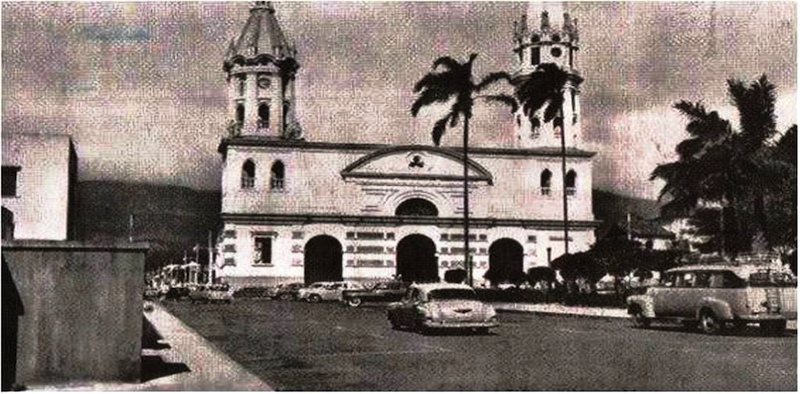
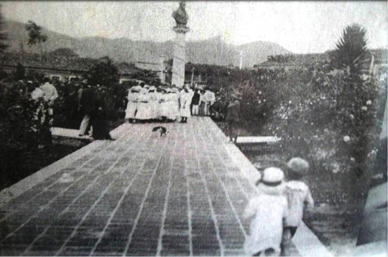

Historia

El Ejecutivo del Estado Táchira, se inicia con la fundación de San Cristóbal, en el Valle de Santiago, el 31 de Marzo de 1571, con justicia, regimiento y demás autoridades de Tunja, en el nuevo reino, Corregimiento del cual comenzó a depender.
Esta dependencia duró hasta el primero de mayo de 1607, cuando se creó el corregimiento de Mérida y la Grita, la Villa de San Cristóbal y otros pueblos más pasaron a su jurisdicción.
El primer corregidor fue el Capitán Antonio Veltran de Guevara, luego fue destituido por el Capitán Pedro Vanegas quien duró basta el 8 de enero de 1609, siendo reemplazado por el Capitán don Juan de Águila y Carrascosa.
Estos corregidos centraron todo el Basamento político administrativo de corregimiento y a esto se debe el inicio de la administración política del Táchira. En 1622, el Rey atiende la petición de las ciudades de Mérida, Espíritu Santo de La Grita, Barinas, Pedraza, Gibralta y San Cristóbal y eleva a la categoría y jerarquía de Gobernación al corregimiento de Mérida y su primer Gobernador fue el Capitán Juan de Pacheco Maldonado.

En 1864 surge el Estado Gobernado del Táchira, creado por la Asamblea Constituyente y su poder ejecutivo. El Triunvirato integrado por José Gregorio Villafañe, Juan Entrena y Antonio Moreno; realizó elecciones sin el gobernador Pascual Casanova, que había sido el primer gobernador en 1856, pero en ese mismo año el General
Hermengildo Zarvace se ausentó para ocupar el cargo de senador en el Congreso, en donde el General Southerland Presidente del Zulia, aprovechó y decretó la anexión de los Estados Mérida, Trujillo y Táchira para formar el gran Estado Zulia La caída de Falcón por la Revolución Azul desplaza a Southerland del gobierno de esta entidad siendo sustituido por el General Venancio Pulgar. Con este cambio el Táchira volvió a gozar de su autonomía y quedó en manos del General Juan Macheson.
En 1881, en la segunda presidencia del General Antonio Guzmán Blanco, se reformó la Constitución Nacional, estableciendo que la República está integrada por nueve grandes Estados; uno de ellos fue el gran Estado de los Andes, con las secciones Trujillo, Mérida y Táchira, quedando cada sección dividida en distritos.